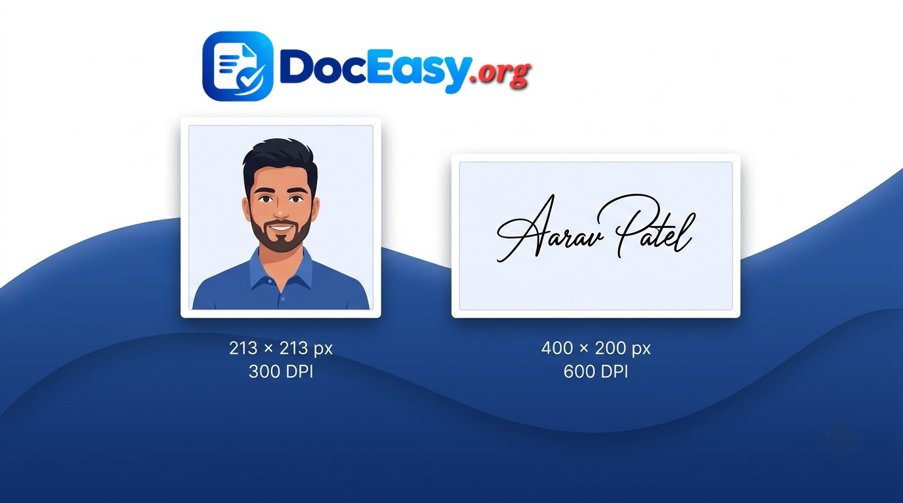

UTI PAN Photo & Signature Resizer
Resize your PAN card photo to 213×213 px and signature to 400×200 px — exactly as required by UTIITSL and Protean (NSDL). 100% free, browser-based.
📋 UTI PAN Card Photo & Signature Requirements
| Document | Dimensions | DPI | Max Size | Format |
|---|---|---|---|---|
| Photo | 213 × 213 px | 300 DPI | 30 KB | JPEG |
| Signature | 400 × 200 px | 600 DPI | 60 KB | JPEG |
| Documents | A4 (as scanned) | 200 DPI | 2 MB total |
Photo Resizer 213×213
Upload your PAN photo. Auto-resize to 213×213 px, 300 DPI, under 30 KB.
Signature Resizer 400×200
Upload your signature. Auto-resize to 400×200 px, 600 DPI, under 60 KB.
Complete Guide: UTI PAN Photo & Signature Resizer (2026)
Filing for a new PAN card or correcting an existing one through UTIITSL or Protean (formerly NSDL) requires you to upload a photograph and signature in very specific formats. If the dimensions, DPI, or file size do not match the portal's requirements, the application will be rejected — often without a clear error message. This guide explains exactly what UTI expects, and how our free tool helps you get it right on the first attempt.
The DocEasy UTI PAN Photo & Signature Resizer is a browser-based tool that resizes your photo and signature to the exact pixel dimensions, DPI, and file size limit required by UTIITSL. It runs entirely on your device — your photo and signature are never uploaded to any server.

📷 [Place Demo Image: assets/images/pan-photo-signature-demo.jpg]1. Why PAN Photo and Signature Specifications Matter
The Income Tax Department of India, through its authorised agencies UTIITSL and Protean (NSDL), accepts PAN applications in two formats — physical (paper) and digital (e-PAN). For both formats, the photograph and signature must meet strict scanning standards defined by the department. These standards ensure that the PAN card, once printed, contains a photo and signature that is legible, non-distorted, and can be matched against the applicant's physical documents during verification.
If your uploaded photo does not meet the size or dimension requirements, the online application form will not accept it. If it does pass the initial upload but is later found to be improper during verification, the application will be rejected and the applicant will have to re-apply with the correct fees. This is why getting the photo and signature right the first time is so important.
2. Exact UTI / UTIITSL Specifications
Below are the exact specifications UTIITSL requires for PAN applications in 2026:
| Document | Dimensions | DPI | Max Size | Format | Color |
|---|---|---|---|---|---|
| Photo | 213 × 213 px | 300 | 30 KB | JPEG | Color |
| Signature | 400 × 200 px | 600 | 60 KB | JPEG | Black & White |
| Document PDF | A4 scan | 200 | 2 MB total | PDF-A | Color |
3. Photo Requirements — 213×213 px, 300 DPI, 30 KB
The photograph on a PAN card must be a square image of exactly 213 by 213 pixels, scanned or captured at 300 DPI resolution, in full color, and saved as a JPEG file no larger than 30 KB. This square aspect ratio matches the physical print format on the PAN card, and 300 DPI ensures that when printed at the card's actual size, the image is sharp and clear.
In terms of content, the photo should:
- Show the applicant's face straight-on, with both ears visible
- Have a plain white or light-colored background
- Be taken recently (within the last 6 months)
- Not wear dark glasses, caps, or hats (unless for religious reasons)
- Have even lighting with no harsh shadows across the face
- Fill roughly 70-80% of the frame
Do not crop the photo awkwardly or apply Instagram-style filters. The photo should look like a standard passport or ID card photograph.
4. Signature Requirements — 400×200 px, 600 DPI, 60 KB
The signature on a PAN card is captured as a rectangular image of 400 by 200 pixels, scanned at 600 DPI (a much higher resolution than the photo, because signatures contain fine ink strokes), and saved as a JPEG no larger than 60 KB. The signature is usually rendered in black and white to match the printed format on the card.
Best practices for the signature:
- Sign on plain white paper using a black or dark blue ball-point or gel pen
- Sign in the same style you normally use for official documents
- Make sure the entire signature fits within the visible frame, with a small margin on all sides
- Scan or photograph at high resolution — do not use a low-quality phone camera photo
- Ensure no shadows or paper wrinkles are visible
- Do not use digital signature fonts — the applicant's actual handwritten signature is required
5. How to Use the DocEasy PAN Photo & Signature Resizer
Using our tool takes less than a minute. Here is the step-by-step process:
- Upload the photo: In the Photo Resizer card on the left, click the upload box and select your photo. JPG, PNG, and WEBP are all supported.
- Adjust if needed: The default values (213 × 213 px, 300 DPI, 30 KB) are pre-filled and match UTIITP requirements. You normally do not need to change them.
- Click "Resize & Download Photo": The tool resizes the image to 213 × 213 px, embeds 300 DPI in the JPEG header, and iteratively compresses it to fit under 30 KB. It then downloads the file to your device.
- Upload the signature: In the Signature Resizer card on the right, upload your scanned signature.
- Click "Resize & Download Signature": The tool resizes to 400 × 200 px, embeds 600 DPI, and compresses to under 60 KB.
- Upload to UTI portal: Use the two downloaded files in your UTI PAN application form.
6. Understanding DPI — Why 300 and 600 Matter
DPI stands for Dots Per Inch. It tells the printer how many dots of ink should be placed in every inch of printed output. When a photo or signature contains a DPI value in its JPEG metadata, printers and document verification software read that value and use it to decide how large the image should be printed.
A 213 × 213 pixel photo at 300 DPI prints to a physical size of roughly 18 × 18 mm (0.72 × 0.72 inches). A 400 × 200 pixel signature at 600 DPI prints to roughly 17 × 8.5 mm. These are the exact sizes required on the PAN card format, and that is why the specific DPI values are mandatory.
If you upload a photo that is 213 × 213 pixels but with 72 DPI metadata, the printer will think the photo should be printed at almost 3 inches wide — which will overflow the PAN card. The UTI validation system checks the DPI field in the JPEG header and rejects images that do not have the required value.
DocEasy's tool writes the correct DPI value into the JPEG's JFIF header, so the file passes UTI's validation check.
7. Common Reasons PAN Photo/Signature Rejections Happen
Based on publicly reported cases and UTIITSL help documentation, the most common reasons for rejection are:
- Wrong dimensions: Photo not exactly 213 × 213 px, or signature not exactly 400 × 200 px
- Wrong DPI: Photo missing 300 DPI metadata, or signature missing 600 DPI metadata
- File too large: Exceeding 30 KB (photo) or 60 KB (signature)
- Wrong format: Uploading PNG, GIF, or BMP instead of JPEG
- Poor quality: Blurry, pixelated, or heavily compressed images
- Wrong content: Photo with patterned background, tilted head, or covered ears
- Signature too small: Signature occupying less than 30% of the frame
- Color signature: Signature scanned in color instead of black & white
- Distorted aspect ratio: Non-square photo, or stretched signature
By using a proper resizer like DocEasy's, all of these issues can be avoided. The tool enforces exact dimensions, correct DPI metadata, JPEG format, and the file size ceiling — leaving only the content quality in your hands.
8. Difference Between UTIITSL and Protean (NSDL)
India has two authorised agencies for PAN card issuance: UTIITSL (UTI Infrastructure Technology and Services Limited) and Protean (formerly NSDL e-Governance). Both accept applications, but their online portals have slightly different upload requirements.
| Requirement | UTIITSL | Protean (NSDL) |
|---|---|---|
| Photo dimensions | 213 × 213 px | 213 × 213 px |
| Photo max size | 30 KB | 30 KB |
| Signature dimensions | 400 × 200 px | 400 × 200 px |
| Signature max size | 60 KB | 60 KB |
| Document PDF max | 2 MB | 2 MB |
Fortunately, both agencies use the same specifications. The output from DocEasy's PAN resizer works for both UTIITSL and Protean applications without any changes.
9. Privacy and Security
Your PAN application photo and signature are sensitive personal documents. Sending them to a random website's server can be a privacy risk if that server is compromised or logs your data.
DocEasy runs entirely in your browser. When you upload a photo, it is loaded into your browser's memory using the FileReader API, resized using the HTML5 Canvas API, compressed using toBlob, and downloaded using the browser's native download mechanism. At no point does the file leave your device. You can verify this by disconnecting from the internet after the page loads — the tool will continue to work.
10. Tips to Get the Best Result
- Start with a high-quality source: The tool works best with a source image at least 400 × 400 px for photos and 800 × 400 px for signatures.
- Use proper lighting: Natural daylight or bright white LED light gives the cleanest results.
- Scan instead of photograph (if possible): A flatbed scanner produces a cleaner signature image than a phone camera.
- Use plain paper: Avoid lined or colored paper for signatures — the lines can be picked up as ink.
- Sign large enough: The signature should fill most of the 400 × 200 frame, not be a small mark in the corner.
- Check the downloaded file: After downloading, open the JPEG file on your computer and check its properties to confirm the dimensions and file size.
- Keep a backup: Save the original full-resolution photo and signature so you can re-run this tool if you need a different size for another application.
11. Frequently Asked Questions
Is this tool free to use?
Yes. DocEasy is 100% free with no signup, no watermark, and no daily limits. All processing happens in your browser.
Does it work for Protean (NSDL) PAN applications too?
Yes. Protean uses the same photo and signature specifications as UTIITSL — 213×213 px photo (30 KB) and 400×200 px signature (60 KB). The output from this tool works for both portals.
My photo is already 213×213 px but still gets rejected. Why?
The most likely reasons are (1) file size over 30 KB, (2) missing DPI metadata — many online tools resize the pixels but do not embed the 300 DPI value in the JPEG header, or (3) the source image was low quality and compression made it look pixelated. DocEasy handles all three: it resizes, embeds DPI, and auto-adjusts quality to stay under the file size limit while preserving the best visual result.
Are my photos uploaded to a server?
No. Everything happens locally in your browser using the HTML5 Canvas API. Your photo and signature never leave your device.
What if I do not know my source image's DPI?
It does not matter. The tool re-encodes the image from scratch and writes the correct DPI value (300 for photo, 600 for signature) into the output JPEG header regardless of the source DPI.
Can I use the same photo for multiple applications?
Yes. Save the downloaded 213×213 px JPEG for future use. As long as the PAN requirements do not change, the same file will work for any new PAN application.
Why is my signature file larger than 60 KB?
Signatures with fine ink strokes and soft anti-aliasing can exceed 60 KB at high quality. The tool auto-reduces JPEG quality step by step until the output fits under 60 KB. If your source is very high resolution (e.g., 2400 × 1200 px), consider downsizing it first with our Image Resizer, then run it through this tool.
Does this tool work on mobile?
Yes. The tool is fully responsive and works on Android, iOS, Windows, macOS, and Linux. On mobile, tap the upload box to open your camera or gallery, and the file downloads directly to your phone's Downloads folder.
Can I resize multiple photos at once?
Currently the tool processes one photo and one signature at a time. Batch processing is on our roadmap.
Is there a file size limit for the input image?
No hard limit, but images over 10 MB may take a few seconds to load on older devices. The tool downscales internally before processing, so even very large source files work fine.
12. Related Tools You Might Need
If you found this helpful, you may also like our Passport Photo Maker for passport-size photos, our Signature Resize tool for general exam signatures, our Card Cropper for cropping ID cards to exact size, our Image Compressor for reducing file size, and our PDF Compressor for compressing the PAN document PDF under 2 MB.
13. Conclusion
Applying for a PAN card should not be held up by a wrong photo size or oversized signature. With DocEasy's free UTI PAN Photo & Signature Resizer, you can be sure that your uploaded photo is exactly 213 × 213 px at 300 DPI under 30 KB, and your signature is 400 × 200 px at 600 DPI under 60 KB — the exact values UTIITSL and Protean accept.
The tool runs 100% in your browser, so your sensitive personal documents never leave your device. Bookmark this page and use it whenever you need to file a new PAN application, correct an existing one, or re-apply after a rejection.